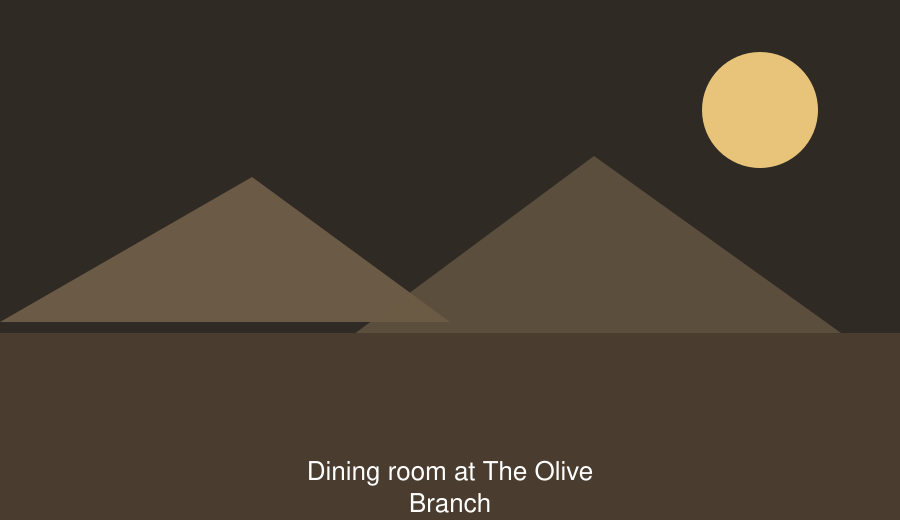

About the restaurant

Nadia and Khalil Saeed opened The Olive Branch in with eight tables and one charcoal grill. Their daughter Rana runs the kitchen now. The grill is the same one.
Everything on the mezze list is made in the morning, in the same kitchen, from the market on Rainbow Street. We do not freeze anything. That means a dish occasionally runs out before closing, and we would rather tell you that than serve you something we defrosted.
Opening hours
| Day | Doors open | Kitchen closes | Doors close |
|---|---|---|---|
| Sunday | 12:00 | 22:30 | 23:30 |
| Monday | 12:00 | 22:30 | 23:30 |
| Tuesday | Closed | Closed | Closed |
| Wednesday | 12:00 | 22:30 | 23:30 |
| Thursday | 12:00 | 23:30 | 00:30 |
| Friday | 13:00 | 23:30 | 00:30 |
| Saturday | 12:00 | 23:00 | 00:00 |
We close every Tuesday. On we open at 19:00 for the Eid holiday.
What guests say
The muhammara is the best in Amman, and I have eaten a great deal of muhammara in the line of duty.
— Layla Nasser, Amman Food Review, March 2026
We asked for a table for eleven at short notice on a Thursday. They found one, and they remembered that my mother cannot eat gluten.
— Hussein Odeh, guest since 2011
Reservations and finding us
We take bookings by telephone only, between 10:00 and 21:00, up to four weeks ahead. We hold three tables back every evening for guests who walk in, so it is always worth trying the door.
For groups of eight or more, please call at least two days ahead so the kitchen can plan the mezze. We hold a booking for twenty minutes past the reserved time.
The Olive Branch14 Rainbow Street
Jabal Amman, Amman 11181
Jordan
Telephone: +962 6 461 2200
Email: table@olivebranch.example
See The Olive Branch on OpenStreetMap (opens in a new tab)
The nearest parking is the Rainbow Street public car park, a four-minute walk uphill. The courtyard entrance has a step; the street entrance is level and 90 cm wide.